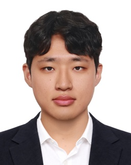

|
|
 |
Jun-hyeon Lim (Justin)
|
[1] Korean Bioinformation Center
[2] Inha Center for Software Oriented Society
[3] Inha Academic Advising Center
[4] Department of Computer Science Engineering, Inha University